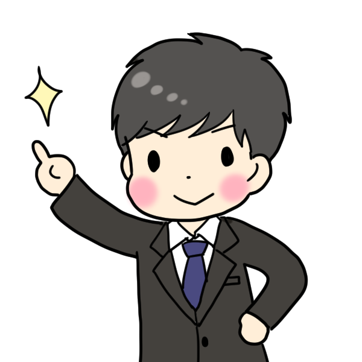

オレンジってどんなところ？？
【就労継続支援B型】
障害を持っている方や自立支援医療を受給されている方へ
軽作業などの就労機会を提供することや、
施設へ通所する事によって日中活動の場を提供し、
社会参加を支援する施設です。
利用者の皆様が毎日安定した穏やかな日常生活が出来るように、
日中の作業やレクリエーション活動を通して知識の向上や社会性、
コミュニケーション能力の向上を目指した訓練を行います
オレンジの利用者はどんな人たち？？
様々な人たちがいます
年齢も20代から60代まで幅広く、
過去のトラウマから社会から遠ざかってしまった方、
障がい特製の為に一般就労や社会に適応できなかった方。
依存症や病気、怪我などが原因で就労機会から離脱し、
その後の復帰に支援が必要な方。
65歳以上の方でも、市区町村の支給決定でご利用いただけます。
オレンジを利用するにはどうしたらいいの？？
ご相談・施設見学は随時受け付けておりますので。
まずは是非一度ご来所ください。
その際に不安な事をお聞かせ頂いたり、
当事業所の支援の方針や訓練内容をご説明致します。
体験利用の後、利用の意思を確認させて頂きますので
利用開始に当たって必要な物や今後の流れをご説明致します。
その後日程調整し、地区の役所で就労継続支援B型の申請を行います。
申請のお手伝いも承りますのでご安心ください。

事業所情報
【住所】
〒557-0015
大阪市西成区花園南2-2-27
【連絡先】
TEL 06-6654-4561
FAX 06-6654-4562
【業務形態】
就労継続支援B型
定員 20名
【最寄り駅】
大阪メトロ堺筋線 天下茶屋駅 徒歩8分
大阪メトロ四ツ橋線 花園町駅 徒歩8分
【開所日と休所日】
オレンジ開所時間 : 10:00 ~ 19:00
サービス提供時間 : 10:00 ~ 18:00
----- 定休日は日曜日です -----